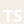
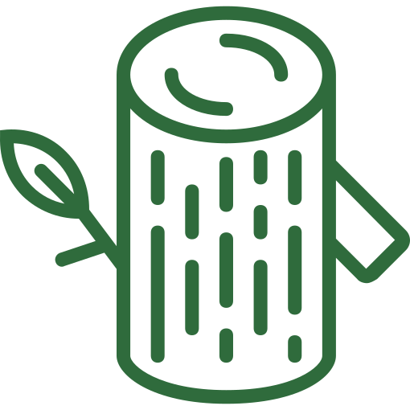
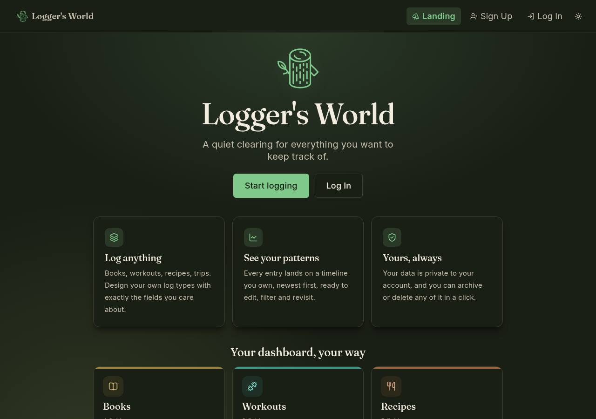
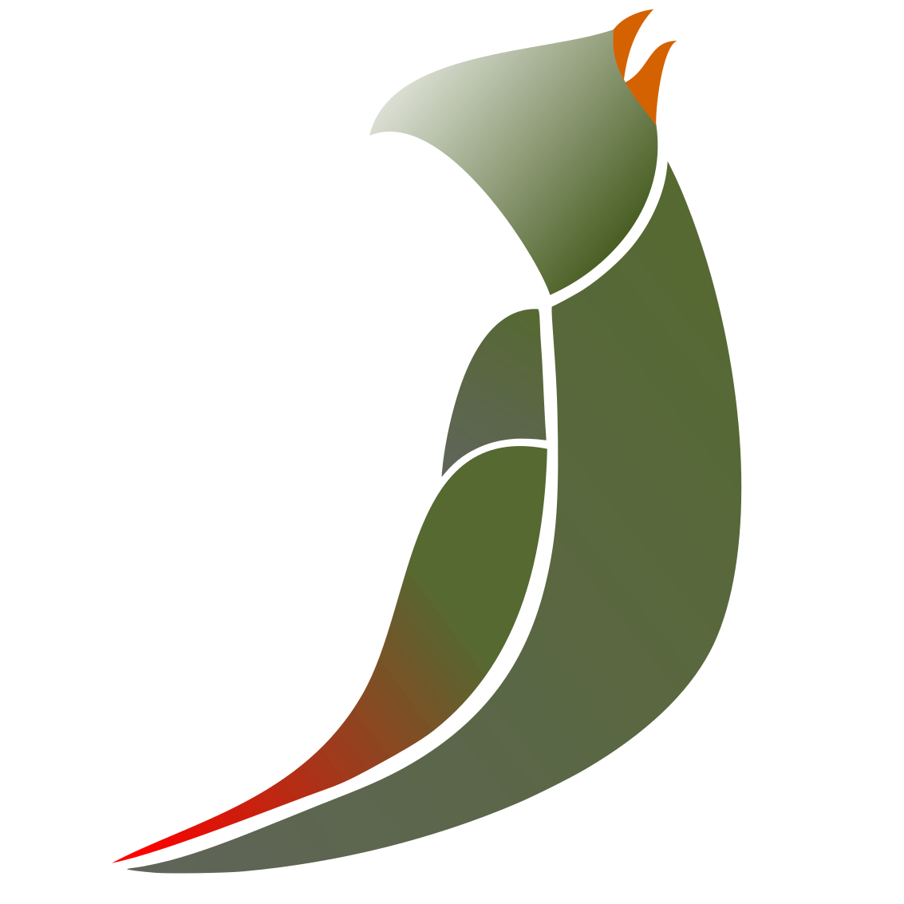
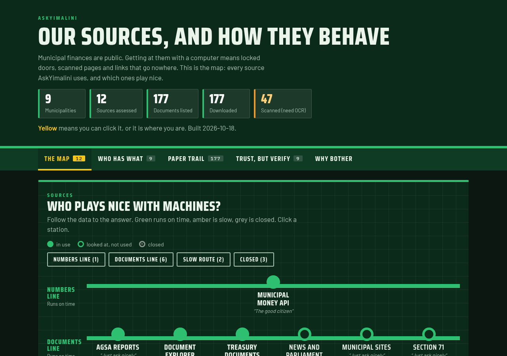

Vuyo Kwakweni
Computer scientist ready for takeoff
From data analysis to system design, a recent graduate who thrives on novel problems.
Plan for growth, test early, run it like it's live
- 1Rolling Grouped effect sizes Donethesis, 2026
-
2Logger's World


Serverless CDK Live7-day build - 3Turaco Chorus Ports and adapters CDK Live
- 4AskYimalini LGLI Hybrid RAG In progressverifier planned
Use the arrow keys or the bar at the top to move between platforms.
Rolling
BSc Computer Science thesis, University of Pécs (Hungary), 2026
Delving into sports science using Ethics by design
With small data, descriptive over prescriptive.
- The problem: small, domain-specific datasets, where big methods overreach.
- The first case: menstrual pain and hormone levels in elite athletes, and whether they relate to performance.
- The design: an analysis engine with no web or database code, built for this study, with room to grow.
- The rule: the optional AI step only ever sees the aggregated results.
LessonAlways sanity check your logic.
In the product: an optional step that sends only aggregated results to OpenAI or a local Ollama model, to rewrite the report.
Building it: I built the analysis to be mathematically sound, and AI makes the results easy to read.
Synthetic data · seed 2026 · not real participants
1 · Grouping
2 · Reporting
Hormone by Performance Type and Cycle Phase OESTROGEN in 'MENSTRUAL' with HIGH INTENSITY: n=22, mean=39.59, sd=5.55 OESTROGEN in 'FOLLICULAR' with HIGH INTENSITY: n=19, mean=87.18, sd=19.53 OESTROGEN in 'OVULATION' with HIGH INTENSITY: n=12, mean=159.96, sd=18.96 OESTROGEN in 'LUTEAL' with HIGH INTENSITY: n=22, mean=113.00, sd=17.24 OESTROGEN in 'MENSTRUAL' with OFF SEASON: n=11, mean=34.42, sd=6.16 OESTROGEN in 'FOLLICULAR' with OFF SEASON: n=8, mean=87.02, sd=18.51 OESTROGEN in 'OVULATION' with OFF SEASON: n=4, mean=158.84, sd=32.57 OESTROGEN in 'LUTEAL' with OFF SEASON: n=5, mean=109.56, sd=25.03
3 · AI-augmented reporting mock-up
Sent to the AI: hormone_name observation_count mean median standard_deviation hedges_g independent_t never the raw measured values
Descriptive Analysis AI Report of Hormone Changes in Elite Cyclists
Oestrogen by cycle phase and training season
Mean oestrogen was lowest in the menstrual phase and highest in the ovulation phase in both seasons. The off-season groups are small (n = 4 to 11), so interpret their means cautiously.
Key finding
The pattern across the cycle was the same in high-intensity and off-season observations.
This is an AI-assisted report. Analysis run ID: 3f2a91c4-…

Logger's WorldLog any habit, your way.
7-day build · 6 AWS servicesinside the free tier
- The plan: a seven-day roadmap, one lifecycle phase a day.
- The early catch: I changed the sign-up rule while there were zero users, not after.
- The trade-off: no Amplify in Africa, so the front end goes via Ireland and the API stays close.
LessonGet the stack right early, then spend your time on what users see.
In the product: none of its own. Its Wonder page calls Turaco Chorus, the next stop.
Building it: Using Anthropic's Claude Code as a coding assistant, I could design my abstract data types and streamline code writing.


Turaco ChorusMicroservice for insights.
5 ports · 2 AI providers
- The rules: consent first, the AI sees only counts, every request is audited.
- A stale image crash-looped the first deploy for about two and a half hours.
- A rolling update that can never finish on a single instance.
- A silent failure: everything reported healthy, and the service was unreachable.
LessonA healthy dashboard can lie. Do manual user-level walk-throughs.
In the product: answers come from Anthropic's Claude or Google's Gemini, switchable, and the model only ever sees counts.
Building it: Using Anthropic's Claude Code as a coding assistant, I could design my abstract data types and streamline code writing.
Still in progress: actively developing features and refining auditing.
A call to Turaco Chorus
POST /ask
Authorization: Bearer <jwt>
Content-Type: application/json
{ "question": "How many books and movies did I watch in August?" }
{
"answer": "You read 2 books and watched 2 films this August.",
"dataUsed": {
"statsQueried": ["Books", "Films"],
"range": { "from": "2026-08-01", "to": "2026-08-31" }
}
}
The AI saw only counts: Books 2 Films 2 Other 4
- Identity
- Consent
- Data
- AI
- Audit
The core talks to five ports. Each has swappable adapters.
AskYimalini
Municipal expenditure explained to residents.
177 official documents · 30,725 pagesfrom 9 municipalities, 2021 to 2024; 6 ingested so far
- The idea: answers about municipal expenditure that you can trace and trust.
- The catch: 23 empty tables turned out to be the main financial statements, pasted in as pictures.
- The trade-off: a reranker moves the right page up, but costs about 18 seconds a question.
- The question: can AI models even reach these sources? Planned, and to be published.
LessonQuestions matter as much as answers.
In the product: Anthropic's Claude writes the answers; the search models run locally.
Building it: AI helped with writing code and tests, and drafting the evaluation questions. I decided the design at every step and checked each answer against its page.
Where it stands: still setting up the corpus, but the app skeleton is up.

What connects them
My approach broken into five checks
Checked before every departure
- Identify the problem
- Identify the user
- Plan for growth
- Testing
- Run it as if someone will be paged
How I work with AI
- Coding assistant
- Insight engine
- Chatbot
- Agent
Curious about my progress?
Logos belong to their owners (Anthropic, OpenAI, Ollama, Google). Icon data from the Simple Icons set.